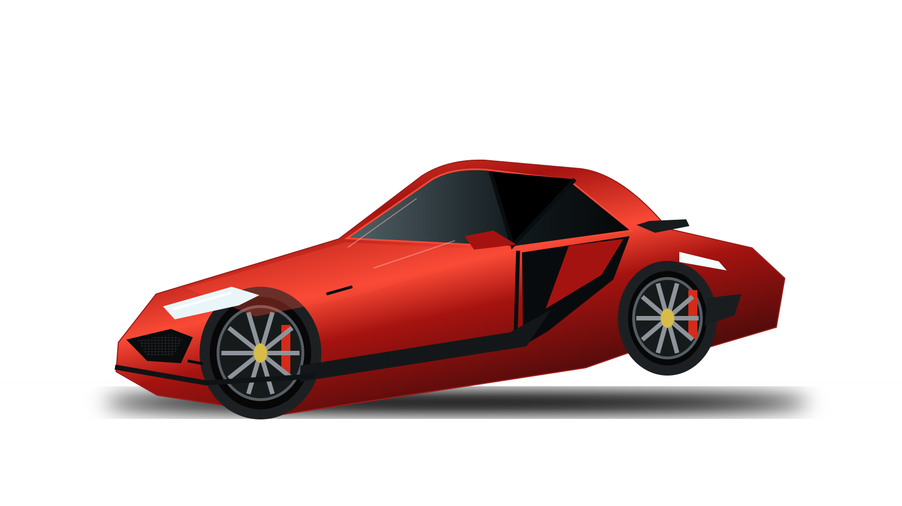
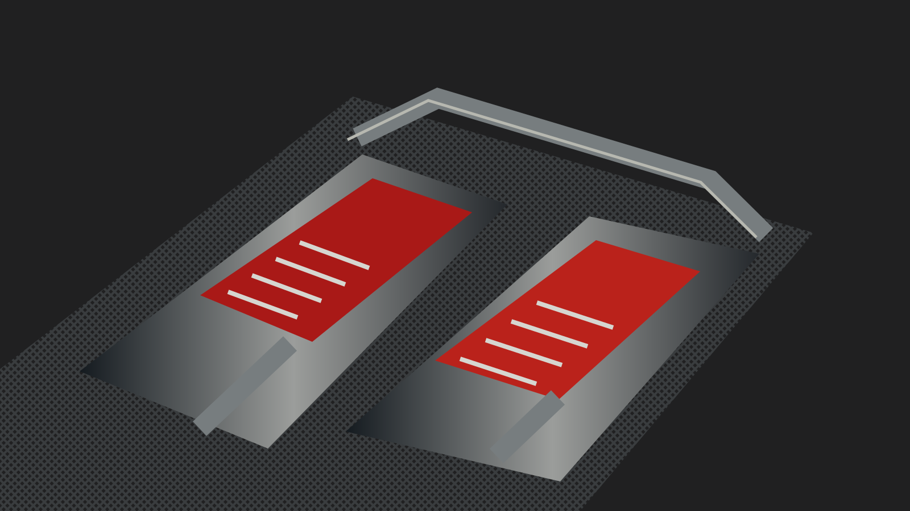

THE NEW VELOCE 296

Driven by
feeling.
DISCOVER THE 296 ↗
01 / DESIGN
Every surface.
Every surface.
A reason.
短促的车头、收紧的腰线与宽阔后肩，构成一台轻盈而有张力的双门跑车。空气流过的路径，也是形体产生的理由。
Rosso / 在暖黑舞台上，保留最直接的力量。

02 / ENGINEERING
Power, with
Power, with
purpose.
车身的每一处开口，都对应散热或导流的角色。这里是结构概念研究，不是动力测试或赛车调校说明。
- LAYOUT
- Mid-engine
- ARCHITECTURE
- Hybrid study
- DESIGN YEAR
- 2026
THE CURATED COLLECTION
Great stories.
Great stories.
Still unfolding.
从轻量双门到长途 GT，
选择你想读的设计档案。
3 份概念车款档案
没有符合这组条件的档案。保留当前条件，或清除筛选重新浏览。
Precision is
a practice.
从静态比例到封闭场地的驾驶文化，性能的意义在于准确，而不是道路竞速。
VELOCE JOURNAL — No. 03